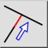
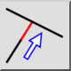
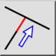
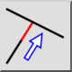

Aparar
Barra de ferramentas / Ícone:
 

Menu: Modificar > Aparar
Atalhos: R, M | X, T
Comandos: trim | extend | rm | xt
Esta é uma tradução automática.
Barra de ferramentas / Ícone:
 

Menu: Modificar > Aparar
Atalhos: R, M | X, T
Comandos: trim | extend | rm | xt
Apara ou estende uma linha, arco ou elipse a outra entidade.